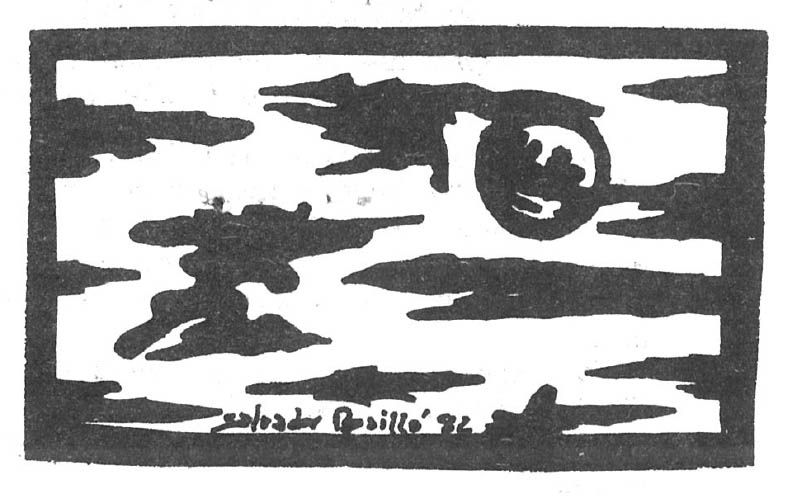
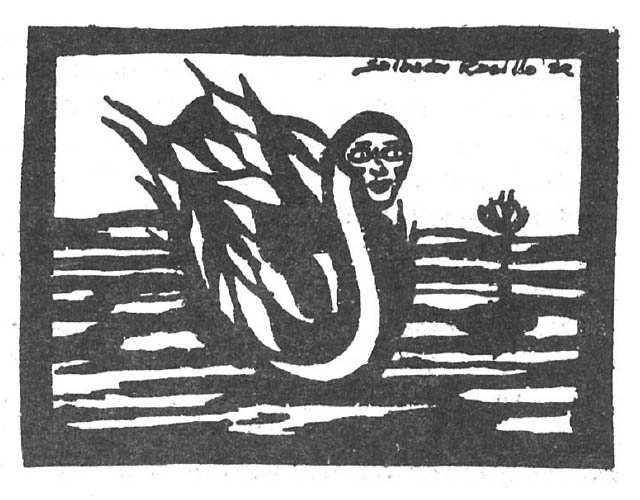
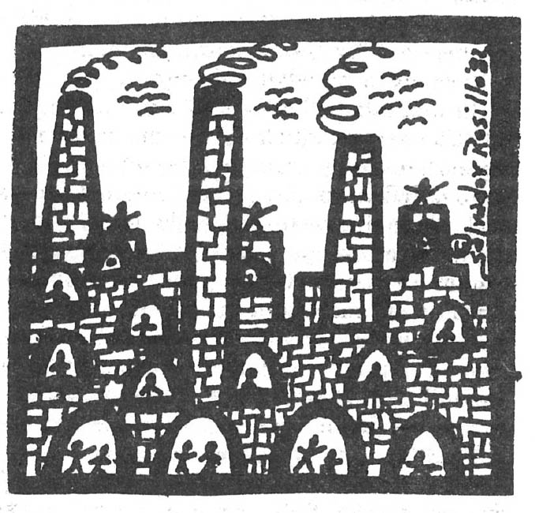

Clouds
By Charles Tomlinson
How should the dreamer, on whose slow Solidities fix his wandering adagio, Seizing, bone-frail, blown Through the diaphanous air of their patrols, Shadows of fanfares, grails of melting snow? How can he hope to hold that white Opacity as it endures, advances, At a dream's length? Its strength Confounds him with detail, his glance falls From ridge to ridge down the soft canyon walls. And, fleeces as it may seem, its tones And touch are not the fleece of dream, But light and body, spaced accumulation The mind can take its purchase on: Cloudshapes are destinies, and they Charging the atmosphere of a common day, Make it the place of confrontation where The dreamer wakes to the categorical call And clear cerulean trumpet of the air.
It is the role of the dream to wake us up to nuances and other dimensions of perception. What we can dream, we can become. The purpose of working with dreams is to bring those kinds of perceptions into our waking lives where they can confront the intellectualized, thinking-based fiction that we might otherwise settle for as our personal reality. There is something impossible about confronting the dream on any terms other than its own. And when we confront it on its own terms, our lives can't help but be transformed by its dimensions and transfused with clarity and poetry.

untitled poem
by David Dunn
the white necks of the swans catch the pulse of the moonlight thru the branches a woman who can not sleep in this heat walks along the edge of a bay or lake. the swans drift in circles. the woman lays in the damp grass. she dreams of a man that her touch turns into a swan.
Could it be that much of psychology has it backward and that the objects of our waking joys are, as often as not, only symbolic of what we really need, not the real thing? Could it be that, in our dreams, the real thing can burst through this waking symbolism and appear for what it really is? In our dreams, we are so close to the heat of what we really feel that we can sleep no more in the slumber of sublimations and substitutions that we settle for in waking life. Our real needs are felt for what they are.

SHAMANIC No. 3 (First Guard: Snow Leopard)
by John T Kellnhauser
Across the mountainpeak Ellesmeres where spring never arrives, the glacial years' collision of continents have carved ice cliffs none but the most magnificently furred can travel without falling. Quick rosettes - silver hoar grey between boulder shadows, the sun ignites the snow - painlight bursts in to crowd the eyes from their sockets. Some men go blind, looking. At night there is ever only shadow swirling, pale whites, unfocused penumbrance amid black and black grey. Certain things live to be only almost seen, to purr "I Exist" and leave a single clawprint's question mark on the snowcrags of the mind.
Is the poet writing about consciousness states or about landscapes? Or is there a modality of cognition where the two are the same and where what is seen is realized as a metaphor for what is unseen, felt? Dreamstates, powerful yet furtive like snow leopards, leave their imprints upon the snow of our waking minds, but only their imprints. Working with dreams, we can hope for more than the occasional tracks that that other creature in us leaves across our lives, we can come face to face with him, we can become something that is at once him and ourselves. We are that purring bundle of warmth and life that inhabits the frozen landscape of our waking lives and, at the same time, we are that frozen landscape also. Somehow, it is very natural for things to be like this. This is the consolation that the snow leopard teaches us and, cold and desolate as our lives become, we can always know that something alive and warm thrives in us, purring "I Exist."

Dream of the Factory
by Alan Steinberg
The long hair of your dreams is tangled in the machinery of your life. Somewhere there is a switch that will turn off the whole assembly, but a metal fist holds you. Look now, from the corners of your startled eyes - the spindles of thread are spinning on their shoots, pulling and twining the flax of your mind, the memories spun out in little snatches of color, the emptiness in long stretches of white or gray. Already you have lost the knowledge of words lost even the reflex of screaming. Now your legs would not support you, nor would your hands remember the direction of your face.
Only when the shuttles of the great loom lurch into action are you released to consciousness upon the bed - the metallic grating still vibrating through your bones. You stare at the ceiling in the dark sweating What are they weaving there, in the big room? For a moment you think of silk gowns, of Persian carpets and flame-yellow shawls. But no, no - somewhere sack cloth is being jerked from bolts and stitched, and the brush of floating lint reminds you of life but only for a moment.
Why is it that we are not, most of us, fully conscious in dreams without awakening? Why is it that perhaps 95% of the population are not lucid dreamers? Could it be because, if we were, we would interfere with the dream too much? Could it be that what we would weave for ourselves with mental interpretations is gunny sack cloth when compared to the Persian carpet that some other agency within us, or working through us, is destined to arrive at? What is being woven in dreams is not just our own lives but the destiny of the human race. What is being fabricated in our dreams is something larger and more intricately beautiful than any of us could ever possibly be aware that we are a part of. Our lives are so much more impoverished than our possibilities. But the dream keeps moving, generation by generation, to the surface. It knows its own time, and it knows its time will come. It is the living bud. Our theories and ideas are the dry scales that fall from it.
"Clouds" was taken from Selected Poems 1961-1974 by Charles Tomlinson, ©Charles Tomlinson 1978. Reprinted by permission of Oxford University Press. David Dunn, the author of "untitled poem" has been published in various places. He keeps track of his dreams and teaches poetry workshops. John T. Kellnhauser, author of the Snow Leopard poem, is a poet and zoologist. He wrote the 'Tips from a Dreamer" column in the last issue. Alan Steinberg's poem "Dream of the Factory" was taken with permission from UROBOROS, a literary review published by Allegany Mountain Press, 111 North Tenth Street, Olean, N.Y. 14760.